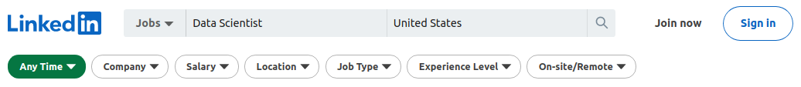
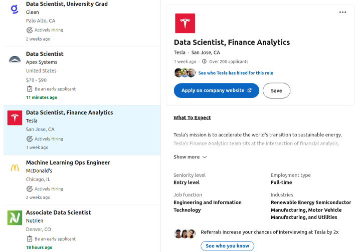
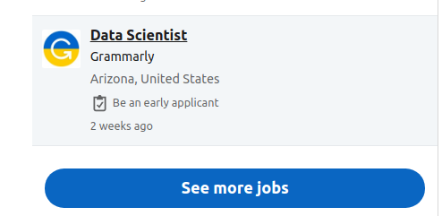
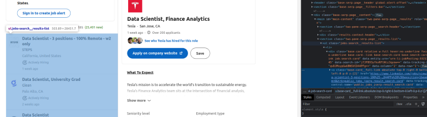
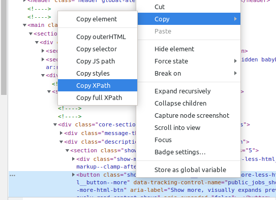
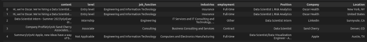

How to Scrape LinkedIn Job Posts Using Selenium — Ready-to-Use Notebook

This article covers the basics of the Python Selenium library. It provides solutions to common problems of automation tools as well as helps learners develop an understanding of the structure of a data scraping project.
Project:
First, I set up the chromium environment on my computer. I will not show that part to keep the article simple. But you can see how it is done here.

LinkedIn does not require a login, as the code I walked through in this article works. This saves a lot of effort and time. You can start scraping by directly going to the LinkedIn job search section. Search for a specific position in a location to generate a link. (I searched for Data Scientist positions in the United States.) Copy the link from the browser’s address bar and store the link in a variable. Then, launch Chrome using Selenium webdriver and navigate to the search result page by supplying the variable to the get() function.
Collecting Links:
From now on, I will show you how I went through the process. I had to divide the data collection process into two because of the structure of the LinkedIn search result pages.

The page composes of two parts; the job list and the content. First, I had to go through the list and extract the links for each job post. Then in the second step, I scraped the actual content by going through the links. There is a little problem here. The list on the left-hand side shows around 25 posts at the beginning. It only loads more if users scroll down the page. However, after a couple of scrolls, the page stops automatically loading more job posts. After that point, users need to click this blue button:
To solve this problem, I had to define two steps using Selenium functions before anything:
- Scroll down the page as many times as I desire.
- Click the blue ‘See more jobs’ button if it appears.
I created a while loop that sends the ‘END’ key to scroll down the page and if the blue button shows up, the Selenium webdriver finds the button and clicks on it. Each iteration loads 25 more job posts to the list. Thanks to the while loop, I could decide on the number of iterations. It also means; 25 * number of iterations = Number of job posts.
After the scrolling stage is done, I started scraping links. The trick here was to find the block that included the job list. I right-clicked and inspected the page and looked for the container that covered(highlighted) the job list.
After finding the list, I went through the list and extracted the information I needed using the find_element() function. The code is as follows;
I also collected locations, company names,position names, and seniority levels in this section in a similar way and created a data frame out of this data.
Collecting Details:
The second part was collecting the skill requirements and job descriptions. I followed a similar way in this part as well. The only difference was that the browser needed to go through different pages rather than the items on the same list page. So, I created a loop function that crawls each link on the data frame I previously gathered. I encountered another issue here. At first sight, job pages do not show much content. Visitors have to click the ‘Show more’ button to see the details. Therefore, I needed to add a click action to the loop.

To do this, I right-clicked the ‘Show more’ button and clicked ‘inspect’. Then, I right-clicked the highlighted section on the newly emerged window and copied the XPath address.
I passed the XPath locator to the find_element() function and assigned a click action. The next step was to collect the data revealed after clicking the ‘Show more’ button. I used the class name locator in this step because there was no clear pattern among job posts. Some companies put the ‘About Us’ part first and then the skill requirements, while some only put the skill requirements. Therefore, I decided to collect everything in that HTML class section. I stored everything that is in text form in the list I had created previously.
The snippets only show a sample of the code to keep the article as short and readable as possible. Check the notebook to understand the logic and structure.The last step was to create a data frame and merge both data frames. Then, the dataset was ready for analysis.
This is what the final data frame looked like after removing the link column;
Conclusion:
The ability to use scraping tools is a big plus for data scientists. This skill reduces scientists’ dependency on other data sources like APIs and databases. It also grants the opportunity to work on unique real world data and create unique insights.
The entire notebook is on my GitHub page. Note that you can also extract data for other professions and locations with this code by simply changing inputs.